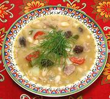
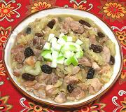
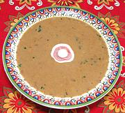
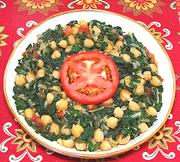
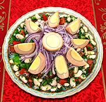
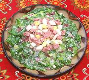
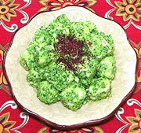
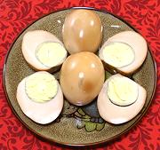

These are the dishes served at the Musica Donavania traditional holiday event, featuring music of Medieval Christians, mostly Spanish, and the Sephardic Jews they drove out of Spain in 1492. It should be noted that in 2015 both Spain and Portugal started accepting citizenship applications from descendents of the exiled Jews. This program ended at the end of 2019 with over 132,000 applications received by Spain.
|

Pork with Wheat Spain |

Chicken with Apples Spain |

Mushroom Soup [v] Spain |
|

Chard with Chickpeas [v] Spain / Morroco |

Bean Salad with Eggs [v] Sephardic |

Catalán Salad Spain |
|

Cheese in Cilantro Mojo [v] Spain |

Onion Skin Eggs [v] Sephardic |